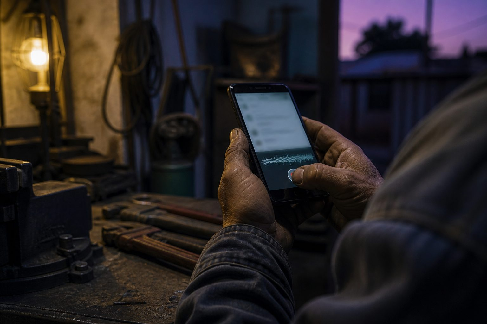
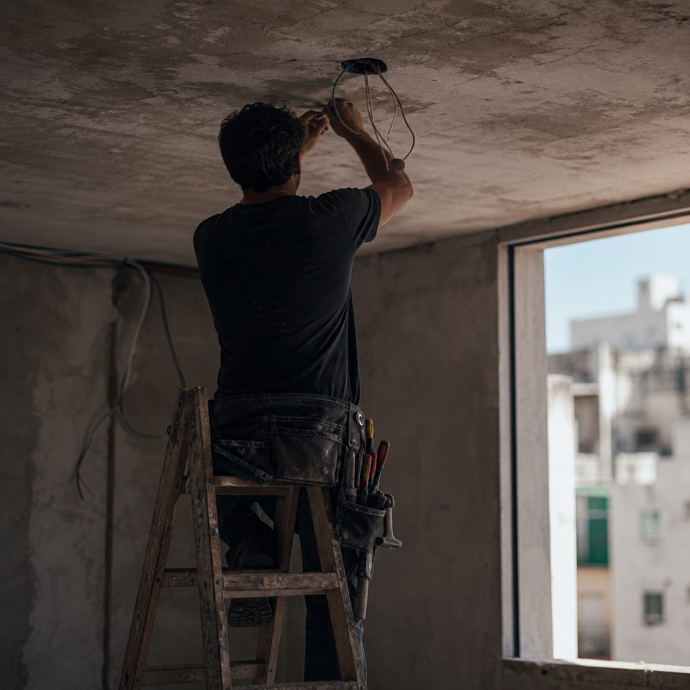
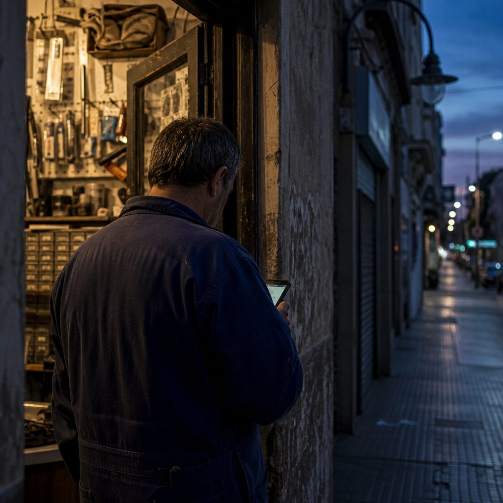
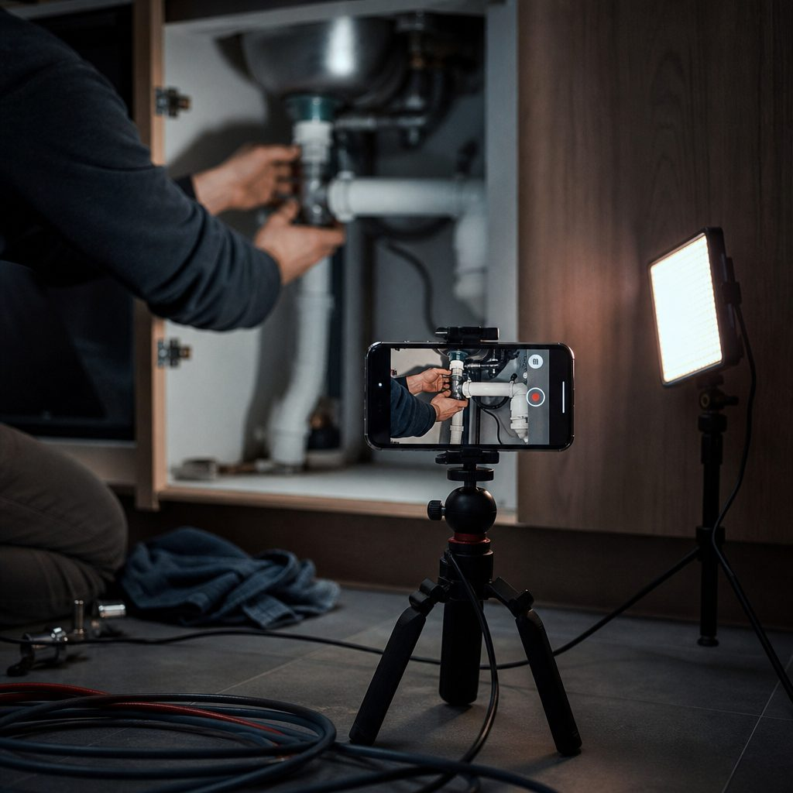

Propuesta comercial · Confidencial · Al Toque

Una estrategia de Growth para llevar Al Toque de un producto que anda a un producto que se usa todos los días. Posicionamiento, adquisición, embudo, contenido, automatización y pauta —con una métrica clara para cada etapa.
Popcorn es una agencia de marketing, comunicación y creatividad que trabaja desde una mirada de negocio. Empezamos hace casi 15 años como productora audiovisual y hoy somos una agencia integral. Para Al Toque no proponemos "llevar las redes": proponemos diseñar el sistema que convierte a un desconocido en un usuario que vuelve todas las semanas.
Arrancamos por el objetivo comercial —usuarios activos, costo de adquisición, conversión a pago— y desde ahí definimos las acciones. Nunca al revés.
Construimos nuestros propios sistemas con IA puertas adentro: agentes, generador de presupuestos interno, plataforma para que los clientes aprueben videos. Sabemos lo que es lanzar algo que todavía se está puliendo.
Estrategia, contenido, producción audiovisual, diseño, pauta y automatización en el mismo equipo. Sin coordinar tres proveedores para sacar una campaña.
El que pide un presupuesto lo quiere ya. Si tarda tres días en llegar, ese trabajo ya se lo llevó otro. Al Toque convierte un audio en un presupuesto profesional en segundos, lo manda, avisa cuando lo aceptan, cobra por Mercado Pago y factura ante ARCA si hace falta. Todo en el mismo hilo de WhatsApp, sin instalar nada.
Ese es el producto. Lo que falta no es tecnología: es que el mercado se entere, lo pruebe y lo incorpore como hábito.
El bot está operativo y ya se hicieron cobros de prueba punta a punta. Se sigue puliendo seguridad, onboarding y envío automático.
La meta original era el 1° de septiembre. Se acordó correrla para construir la estrategia antes del lanzamiento y no en paralelo.
Ustedes lo definieron: la primera métrica es el uso, no la cantidad de suscripciones. Coincidimos, y acá lo volvemos medible.
Los dos fundadores dejan lo que hacían para dedicarse a Al Toque. El lanzamiento tiene que ser cómodo: por eso delegan esta parte.
Revisamos el sitio, los planes publicados, el discurso de la reunión y el mapa competitivo. Cada punto tiene un dato atrás y una forma concreta de resolverlo. No hay una sola cifra inventada en este documento.
La web encierra el producto en un nicho que ustedes mismos dijeron no querer: "no nos queremos limitar solamente a oficios". Hoy el plan Individual dice "Para técnicos independientes" y el Equipo "Para talleres con más de un técnico". Cada peso de pauta que traiga a un diseñador o a un kinesiólogo va a rebotar contra una página que le dice que el producto no es para él.
Las referencias del ecosistema arrancan mucho más abajo: Facturitas desde $8.499, Factugo desde $7.499, Tramitito desde $4.900. Al Toque hace más que todas ellas —presupuesta, cobra y factura— pero eso no está argumentado en ningún lado. Ustedes quieren que sea "un gasto hormiga": no lo va a ser bajando el número, lo va a ser cuando el usuario entienda que un solo trabajo más por mes paga la suscripción varias veces.
El FREE ofrece "15 presupuestos en total": es un tope de por vida, no mensual. Si la estrategia es "vení, probanos y nos vas a elegir", el free tiene que durar lo suficiente para que se forme el hábito. Con 15 de por vida, al usuario activo se le agotan en tres semanas y al tibio no se le agotan nunca —y entonces jamás decide pagar.
Es el verde exacto de WhatsApp y aparece 27 veces en la hoja de estilos del sitio. El problema no es estético: ustedes definieron su diferencial como "no es la IA, es Al Toque, somos nosotros dos por detrás". Una marca que se parece a WhatsApp no puede reclamar esa confianza —se la transfiere a Meta—. Y en un canal donde circulan bots truchos, parecerse a WhatsApp genera sospecha.
Cero testimonios, cero casos, cero números de uso en el sitio. Y las 15 pruebas hechas hasta hoy fueron ficticias, no con personas reales. Mientras tanto, el jugador más grande del ecosistema comunica 5.000 usuarios activos. En una categoría donde el freno es "¿le doy mis datos y mis clientes a un bot?", la prueba real es el activo más difícil de conseguir y el más barato de producir.
Todos los botones del sitio llevan a WhatsApp: no hay captura de mail ni oferta intermedia. Si el usuario no abre WhatsApp en ese momento, se perdió y no hay forma de volver a buscarlo. Además, sin eventos instrumentados, el algoritmo de Meta optimiza a ciegas: no sabe quién de los que hicieron clic terminó usando el producto.
Hoy nadie resuelve presupuesto → aceptación → cobro → factura en un solo hilo de WhatsApp. Ustedes lo detectaron bien. Pero conviene ser precisos sobre qué tipo de ventaja es esa: "presupuestar" es una funcionalidad que un competidor con base instalada puede agregar.
La ventaja defendible no es el código: es ocupar la palabra "presupuesto" en la cabeza del monotributista antes que ellos. Eso no se programa, se comunica — y es exactamente el trabajo de esta propuesta.

Monotributistas activos en Argentina en 2026. Pasaron de 513 mil en 1998 a 2,2 millones: +331% y más del 20% de los aportantes del sistema previsional.
Usuarios activos que comunica Facturitas, lo más grande del segmento. Genera comprobantes por WhatsApp con IA y declara una meta de USD 500.000 de ARR para fin de 2026. Su core es facturar, no presupuestar.
El resto —Factugo, TusFacturasAPP, Xubio, Contabilium, Colppy, Tramitito— compite en facturación y contabilidad. El presupuesto, que es donde arranca la venta del oficio, está desatendido.
De ahí sale todo lo demás. Y de ahí sale la métrica: si el objetivo de la primera etapa es el uso —como ustedes plantearon— hay que definir qué significa "uso" con precisión, porque de eso depende cómo se optimiza cada campaña.
Que el monotributista sepa que esto existe y entienda en cinco segundos qué le resuelve. Métrica: costo por conversación iniciada.
Que complete el onboarding y mande su primer presupuesto real a un cliente real. Ahí entiende el producto. Métrica: costo por usuario activado.
Que vuelva. El segundo presupuesto en los primeros siete días es el mejor predictor de que va a pagar. Métrica: retención a 7 días y conversión free → pago.
La definición que proponemos. "Usuario activado" = terminó el onboarding y envió al menos un presupuesto a un cliente real. No es un registro ni una conversación: es alguien que ya usó Al Toque para trabajar. Todo el sistema —pauta, contenido, automatizaciones— se optimiza contra ese número. Es la diferencia entre traer curiosos y traer usuarios.
Preferimos ponerlos sobre la mesa ahora. Ninguno es motivo para no avanzar; todos son motivo para avanzar de una forma determinada.
Arrancamos con inversión contenida y crecemos por tramos, atados a que el onboarding y el envío automático estén cerrados. Un mal primer uso no se recupera con más pauta.
El lenguaje que ustedes eligieron es el correcto: "somos nosotros", no "es la IA". Lo llevamos a toda la comunicación y lo reforzamos con verificación de Meta, presencia real de marca y prueba de usuarios.
Arrancamos con contenido de producto y de usuario, que no los necesita en cámara. Dejamos el contenido de fundadores listo para la etapa 2: es el activo de confianza más potente y más barato que tienen.
Construimos base propia desde el día uno: captura de mail y lista propia de interesados. Si mañana cambia una política de Meta, no se apaga el negocio entero.
Velocidad y territorio: ocupamos la palabra "presupuesto" ahora, mientras el resto mira la factura. La marca es la barrera que el código no da.
Trabajamos con benchmarks de mercado (ver escenarios de inversión) y los primeros 45 días fijan la línea de base real. Todo lo proyectado se recalibra con datos propios.
Ustedes fueron claros: el foco inicial son individuos y microempresas —oficios y servicios profesionales de una persona—, con el monotributista como público principal. Lo ordenamos en tres tiempos para no diluir el mensaje del lanzamiento.
Plomería, electricidad, gas, refrigeración, aire acondicionado, pintura, herrería, cerrajería, service técnico, albañilería, jardinería.
Por qué primero: presupuestan varias veces por semana, compiten por velocidad de respuesta y cobran en el momento. Es donde el dolor es más frecuente y más caro.
Diseño, fotografía, video, marketing freelance, desarrollo, kinesiología, nutrición, entrenadores, veterinaria, arquitectura y decoración.
Por qué después: presupuestan menos seguido pero valoran mucho más la presentación y el respaldo del PDF con su marca. Requiere un mensaje distinto, no el mismo con otra foto.
Estudios jurídicos y contables: ustedes identificaron que la estructura de honorarios —tasa de justicia, cobro por etapas— no entra en el presupuesto genérico.
Pymes y talleres multi-técnico (plan Equipo): otro discurso, otro canal y otro ciclo de venta. Con ellos vuelve a la mesa LinkedIn, que para esta etapa descartamos.

No prendemos todo el mismo día. Cada motor tiene un momento, un objetivo y una métrica propia. El orden importa tanto como la elección.
El motor principal, tal como ustedes plantearon. Es donde está el monotributista de oficio, donde el costo por conversación es más bajo y la única plataforma que lleva directo al WhatsApp con un clic. Objetivo inicial: mensajes. Desde el mes 2: conversiones optimizadas contra "usuario activado".
Piezas cortas y verticales que muestran el producto funcionando y enseñan algo del oficio. Sostiene la marca entre campaña y campaña, alimenta el remarketing y baja el costo de la pauta con el tiempo. Además: cuando alguien busque "Al Toque" para ver si es confiable, tiene que encontrar una marca viva.
El producto ya tiene la mecánica —sumar a alguien da meses gratis—, pero está enterrada en el menú del bot. Falta convertirla en campaña, con un momento de pedido y una recompensa clara. En este segmento el boca a boca no complementa al marketing: es el canal principal.
Corralones, casas de repuestos, distribuidoras de materiales eléctricos y sanitarios, gremios, escuelas de oficios y los grupos de WhatsApp y Facebook donde ya están agrupados. Es el canal más barato y el más subestimado: llegás a cien electricistas de una vez, con la recomendación de alguien en quien ya confían.
Coincidimos con lo hablado: hoy nadie busca "bot que me hace presupuestos" porque la categoría no existe en la cabeza de la gente. Google se enciende cuando haya búsquedas de marca. Ahí sí es imprescindible: cuando alguien escuche "Al Toque" y lo busque, el resultado tiene que ser de ustedes y no de un competidor pujando por su nombre.
Estaba en el pedido original y lo evaluamos con seriedad: para esta etapa lo descartamos. El monotributista de oficio no decide ahí y el costo por clic es sensiblemente más alto que el de Meta. Vuelve a la mesa con el plan Equipo y las pymes.
El embudo de Al Toque no termina en la venta: empieza mucho antes y sigue mucho después. Lo mapeamos entero, identificamos dónde se pierde gente y diseñamos el mensaje y la automatización de cada fuga.
Ve el anuncio o el contenido
Abre el WhatsApp
Carga sus datos
Manda el presupuesto #1
Vuelve y manda el #2
Se suscribe
Trae a un colega
| Punto de fuga | Qué pasa hoy | Qué hacemos |
|---|---|---|
| Del anuncio al WhatsApp | El sitio solo redirige a wa.me. Si no abre WhatsApp en ese momento, se perdió y no hay forma de reimpactarlo. | Captura de mail como alternativa · píxel y eventos · públicos de remarketing |
| Del "hola" al onboarding | Pedir muchos datos de una es chocante —lo detectaron ustedes—. Es el momento de mayor abandono de todo el embudo. | Guion conversacional · orden de las preguntas · momento de pedir logo y web |
| Del onboarding al presupuesto #1 | Sin dato aún. Es el paso más importante: sin presupuesto enviado no hay usuario, hay registro. | Disparador a las 2 h y a las 24 h · plantilla de primer presupuesto · caso de ejemplo listo |
| Del #1 al #2 | Sin dato aún. Es el mejor predictor de conversión a pago en productos de suscripción. | Recordatorio útil, no publicitario · aviso de presupuesto aceptado · resumen semanal |
| Del free al pago | El tope de 15 presupuestos totales no está atado a ningún momento de valor demostrado. | Aviso al 80% del límite · mensaje de upgrade basado en lo que ya ganó |
Alcance · Popcorn diseña los flujos, los tiempos y los textos. La implementación dentro del bot la hace el equipo de Al Toque: es su producto y su código.
Al Toque tiene una ventaja enorme para comunicar: el producto se ve. En veinte segundos se muestra un audio entrando y un presupuesto profesional saliendo. Eso convence más que cualquier claim.
Producimos en dos carriles paralelos: piezas orgánicas que construyen marca, y creatividades específicas para pauta —que no son las mismas, aunque muchos las usen igual—.

El producto funcionando, en tiempo real, sin edición trucada. Audio que entra, PDF que sale, cliente que acepta. Es lo que más convierte y lo más fácil de producir.
El presupuesto que mandaste el lunes y te contestaron el viernes. El trabajo que perdiste porque el otro contestó primero. Situaciones reconocibles, contadas sin solemnidad.
Cómo cotizar sin quedarse corto, cómo actualizar precios, cómo pedir una seña, cómo no regalar la visita. Es el contenido que hace que te sigan sin querer comprarte nada.
Usuarios contando lo que les pasó, capturas de presupuestos aceptados, números de uso. El pilar que hoy no existe y el que más falta hace. Arranca en la prueba previa al lanzamiento.
Quiénes están detrás, cómo se cuidan los datos, por qué esto no es un bot más. Responde el freno principal de la categoría. Arranca sin caras y escala a founder-led cuando ustedes decidan.
Variantes por ángulo de mensaje, por oficio y por formato, pensadas para testear. Una campaña de descubrimiento necesita varias versiones del mismo mensaje, no una pieza linda.
Volumen · 8 contenidos mensuales que se replican en historias · diseños incluidos · calendario aprobado por ustedes · producción en tandas · las creatividades para pauta van dentro del módulo de publicidad digital
Con dos personas manejando todo, la automatización no es un lujo: es la única forma de que ningún usuario se pierda por falta de seguimiento. Estos son los flujos, en orden de impacto.
| Flujo | Cuándo se dispara | Qué busca | Impacto |
|---|---|---|---|
| Onboarding conversacional | Primer mensaje al bot | Que complete la carga de datos sin abandonar, con las preguntas en el orden correcto | Alto |
| Rescate de onboarding | Empezó y no terminó · 2 h y 24 h | Recuperar al que se distrajo, retomando desde donde dejó | Alto |
| Empujón al presupuesto #1 | Terminó el onboarding y no presupuestó · 24 h | Llevarlo al momento donde entiende el producto | Alto |
| Reactivación | Hizo el #1 y no volvió · 7 días | Instalar el hábito antes de que se enfríe | Alto |
| Disparador de upgrade | Llega al 80% del límite de su plan | Ofrecer el plan pago en el momento de mayor valor percibido, no antes | Alto |
| Aviso de aceptación | El cliente final acepta el presupuesto | Convertir una buena noticia en momento de marca y en pedido de reseña | Medio |
| Pedido de referido | Después del primer cobro exitoso | Activar la mecánica de meses gratis que ya existe en el producto | Medio |
| Nurturing por mail | Dejó el mail en el sitio y no arrancó | Construir base propia, independiente de Meta y de WhatsApp | Etapa 2 |
| Resumen semanal | Lunes, a usuarios activos | Devolverle sus números para que el producto se vuelva parte de su semana | Medio |
Quién hace qué, y cuándo. Popcorn diseña la arquitectura, los tiempos, los disparadores y todos los textos; los flujos que viven dentro del bot los implementa el equipo de Al Toque, porque es su producto y su base de datos. La capa de email marketing queda para una segunda etapa: recién tiene sentido cuando exista una base propia con volumen —contactos capturados en el sitio y usuarios registrados—. Arrancar antes sería pagar una plataforma para escribirle a nadie.
Cuatro fases. Ninguna arranca antes de que la anterior esté cerrada. La fase 0 es la que más se saltea y la que más caro sale saltear.
Píxel de Meta y API de conversiones, GA4 y Tag Manager, verificación de dominio, definición de eventos —conversación iniciada, onboarding completo, presupuesto enviado, suscripción— y devolución de la señal de "usuario activado" desde el bot hacia las plataformas.
Testeamos tres o cuatro ángulos —velocidad, plata perdida, profesionalismo, cobro— contra dos o tres audiencias por intereses y comportamiento. Objetivo: mensajes. Presupuesto contenido y deliberadamente repartido.
Concentramos presupuesto en lo que ganó, cambiamos el objetivo a conversiones, sumamos remarketing sobre quienes iniciaron conversación y no activaron, y construimos públicos similares a partir de los que sí activaron.
Aumentamos inversión solo sobre lo que ya demostró rentabilidad. Sumamos Google: campaña de marca —para que nadie compre "Al Toque" antes que ustedes— y búsquedas de categoría a medida que la demanda se instale.
Estos son los importes netos de inversión mensual en plataformas —la que define y abona Al Toque directamente, con su propia cuenta y tarjeta—. Va aparte del honorario de agencia. Cada escenario está proyectado con benchmarks públicos de mercado, no con números elegidos a gusto: abajo están todos los supuestos.
Elegí una opción · al seleccionar un escenario queda incluido en el correo de "Quiero avanzar"
Solo Meta. Alcanza para aprender, no para escalar.
Meta con volumen suficiente para testear en serio.
Meta + Google. A partir del mes 3, sobre lo validado.
Fee variable de gestión · 15% sobre la inversión neta en medios → $180.000 / $300.000 / $525.000 + IVA por mes según el escenario · se factura solo mientras haya campañas activas
| Etapa del embudo | Esc. 1 · $1,2 M | Esc. 2 · $2 M | Esc. 3 · $3,5 M | Supuesto aplicado |
|---|---|---|---|---|
| Impresiones | 150.000 | 277.778 | 538.462 | CPM $8.000 / $7.200 / $6.500 — mejora por optimización |
| Clics | 1.800 | 4.167 | 9.692 | CTR 1,2% / 1,5% / 1,8% |
| CPC medio | $667 | $480 | $361 | Resultado, no supuesto |
| Conversaciones iniciadas | 900 | 2.083 | 4.846 | 50% de los clics abre el chat |
| Costo por conversación | $1.333 | $960 | $722 | Resultado, no supuesto |
| Onboardings completos | 315 | 729 | 1.696 | 35% de las conversaciones termina el alta |
| Usuarios activados | 158 | 365 | 848 | 50% de los onboardings manda el presupuesto #1 |
| Costo por activación | $7.619 | $5.486 | $4.127 | El KPI que gobierna toda la etapa |
| Suscripciones pagas | 13 | 29 | 68 | 8% de los activados pasa a plan pago |
| CAC | $95.238 | $68.571 | $51.587 | Costo de adquisición por suscriptor |
| Meses para repagar el CAC | 2,6 | 1,9 | 1,4 | Sobre el plan Individual de $36.000/mes |
Sostener $2.000.000/mes durante seis meses, con una baja mensual de suscriptores del 8%.
| Mes | Activados acumulados | Suscriptores netos | Facturación del mes | Facturación acumulada |
|---|---|---|---|---|
| Mes 1 | 365 | 29 | $1.050.000 | $1.050.000 |
| Mes 2 | 729 | 56 | $2.016.000 | $3.066.000 |
| Mes 3 | 1.094 | 81 | $2.904.720 | $5.970.720 |
| Mes 4 | 1.458 | 103 | $3.722.342 | $9.693.062 |
| Mes 5 | 1.823 | 124 | $4.474.555 | $14.167.617 |
| Mes 6 | 2.187 | 144 | $5.166.591 | $19.334.208 |
Cómo leer esto. A seis meses la facturación acumulada estimada ($19,3 M) supera la inversión acumulada neta en medios ($12 M, más impuestos de plataforma), y el negocio queda con ~2.200 usuarios que ya probaron el producto y 144 suscriptores activos pagando. Ese es el resultado que hace que valga la pena sostener la inversión: no el mes 1, donde ningún producto de suscripción da vuelta el número.
Sobre los impuestos de plataforma. Todos los importes de esta sección son netos. A la inversión en Meta y Google se le suman los impuestos y percepciones vigentes en Argentina, que hoy representan aproximadamente un 52% adicional sobre lo invertido. Es plata que Al Toque le paga directamente a la plataforma, no a la agencia, pero conviene tenerla en el presupuesto desde el principio: un escenario de $2.000.000 netos implica una salida de caja del orden de $3.000.000 por mes.
Supuestos y límites de esta proyección. Los CPM y CTR salen de benchmarks públicos de Meta para Argentina y LATAM en 2026 (CPM de Instagram USD 3-8, Reels USD 2-5; CPM LATAM para campañas click-to-WhatsApp EUR 2-5; CTR mediano 1,5-2,5%), convertidos a pesos a un dólar de referencia de $1.500 y tomados en el extremo conservador del rango. Las tasas del embudo —clic a conversación, conversación a onboarding, onboarding a activación, activación a pago— son estimaciones prudentes de Popcorn: Al Toque todavía no tiene datos propios para calibrarlas. A los 45 días de campaña reemplazamos cada supuesto por el dato real y volvemos a proyectar. Las cifras se revisan cada trimestre, por resultados y por inflación.
Un indicador por etapa del embudo. Los de arriba se mueven rápido y sirven para corregir el rumbo; los de abajo tardan más y son los que dicen si el negocio funciona.
| Etapa | Indicador | Qué nos dice | Cuándo manda |
|---|---|---|---|
| Interés | CTR y retención del video | Si el mensaje y la creatividad enganchan. Es la señal más rápida de todas | Mes 1 |
| Contacto | Costo por conversación iniciada | Cuánto cuesta que alguien abra el WhatsApp. Gobierna el mes 1 | Mes 1 |
| Onboarding | % de onboardings completados | Si el pedido de datos está bien resuelto o está expulsando gente | Mes 1-2 |
| Activación | Costo por usuario activado | Cuánto cuesta traer a alguien que realmente usó el producto. El KPI principal de toda la etapa | Mes 2+ |
| Hábito | % con presupuesto #2 en 7 días | El mejor predictor de que esa persona va a pagar. Si sube, todo lo demás mejora | Mes 2+ |
| Conversión | % de free que pasa a pago | Si el plan gratuito está bien calibrado y si el argumento de valor cierra | Mes 3+ |
| Negocio | CAC y meses de repago | Cuántos meses de suscripción hacen falta para recuperar lo invertido | Mes 3+ |
| Permanencia | Churn mensual | Si el producto retiene. Define si conviene escalar la inversión o no | Mes 4+ |
| Marca | Búsquedas de "Al Toque" | Si la categoría empieza a existir. Es el disparador para encender Google | Mes 3+ |
Seguimiento · tablero en vivo en Looker Studio · reunión quincenal de gestión · informe mensual con lectura, no solo con datos · revisión de estrategia cada 90 días
Sobre los objetivos numéricos. Las metas de cada indicador son las de la proyección del punto anterior, pero las tomamos como hipótesis, no como promesa: Al Toque es un producto nuevo en una categoría que todavía no existe y no hay histórico propio para calibrar. A los 45 días de campaña tenemos la línea de base real y ahí acordamos objetivos por trimestre que podamos sostener.
La claridad sobre los límites evita las dos cosas que arruinan una relación de trabajo: las expectativas mal puestas y las discusiones a mitad de camino.
Como conversamos, el armado de estrategia lleva quince días hábiles con reuniones de por medio. Por eso la salida se corre del 1° a mediados de septiembre: preferimos lanzar con la estrategia lista antes que improvisarla en paralelo.
Contrato y acuerdo de confidencialidad mutuo. Accesos a Business Manager, Google, sitio y analítica. Reunión de arranque con los dos equipos.
Posicionamiento y territorio de marca, público y segmentos, mensajes por ángulo, arquitectura del embudo, plan de contenido, plan de medios y guiones de automatización. Con reuniones de trabajo intermedias, no un documento entregado al final.
Primera tanda de piezas y creatividades. Instrumentación completa de medición. Armado de la estructura de campañas. Prueba con usuarios reales para capturar los primeros testimonios.
Encendido de Meta Ads y del contenido orgánico, con seguimiento diario la primera semana. Se define qué mensaje, qué audiencia y qué formato funcionan, y se fija la línea de base de todos los indicadores.
Concentración de la inversión en lo que ganó. Automatizaciones de rescate y activación funcionando. Remarketing y públicos similares. Apertura del segmento de servicios profesionales.
Ampliación de inversión sobre lo validado. Campaña de marca en Google. Activación de referidos y primeras alianzas de nicho. Primera revisión estratégica de 90 días.
Trabajo sobre retención y conversión a pago. Contenido de usuarios y prueba social. Evaluación del plan Equipo y, con él, de LinkedIn. Segunda revisión estratégica.
Permanencia sugerida · 6 meses · es el plazo mínimo para que un producto nuevo genere datos suficientes y la estrategia se ajuste sobre resultados, no sobre intuiciones
Como conversamos, lo armamos en bloques independientes. Pueden tomar todo, tomar algunos y resolver el resto internamente, o incorporarlos por etapas. Tildá los que les interesan y el correo se arma solo con la selección.
Todos los valores son en pesos, más IVA. Los honorarios de agencia van aparte de la inversión en medios del punto 13, que Al Toque abona directamente a las plataformas. El fee variable del 15% se calcula sobre la inversión neta y se factura solo mientras haya campañas activas. Los impuestos de plataforma (hoy ≈ 52% de lo invertido) los abona Al Toque a Meta y Google, y no forman parte del honorario.
Contrato y confidencialidad. Firmamos contrato de servicios y acuerdo de confidencialidad mutuo: ustedes se cubren respecto de su proyecto y su tecnología, y nosotros respecto de nuestro equipo.
Permanencia sugerida: 6 meses. No es una atadura comercial: es el plazo mínimo para que un producto nuevo genere datos suficientes.
Pagos. Los servicios mensuales se abonan por adelantado, al inicio de cada período. El proyecto inicial tiene dos modalidades: 50% al inicio y 50% contra entrega al valor de lista, o 100% anticipado con un 3% de bonificación. El fee variable del 15% se factura a mes vencido, sobre la inversión efectivamente ejecutada.
Ajuste. En contratos mensuales, revisión trimestral por índice de precios.
Ritmo de trabajo. Reunión quincenal de gestión, informe mensual, canal directo para el día a día y revisión estratégica cada 90 días.
Propiedad. Las cuentas publicitarias, los píxeles, las bases de datos y todo el material producido son de Al Toque. Sin dependencia de la agencia.
Validez de la propuesta · hasta el 30 de agosto de 2026
Revisen los módulos, marquen los que les sirven y escribámonos. Desde la firma hasta el lanzamiento son tres semanas de trabajo, y llegamos cómodos a mediados de septiembre.
Leen la propuesta, marcan los módulos y el escenario de inversión que les cierran.
Una llamada corta para ajustar alcance y resolver dudas sobre los números.
Contrato y acuerdo de confidencialidad. Accesos y reunión de arranque.
Quince días hábiles de estrategia y producción. Lanzamiento a mediados de septiembre.